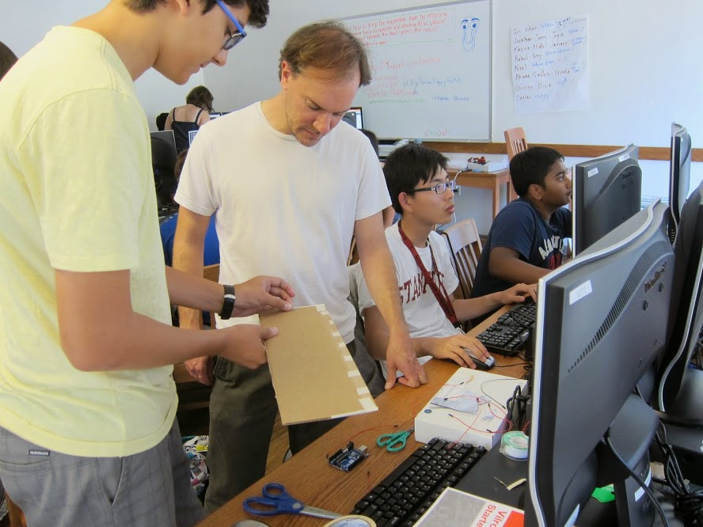

Doug Engelbart

Alan Kay
Alan Kay's AMA on Hacker News

Chris Lattner

Martin Fowler

Joe Edelman

Best material you can find on Bret Victor's website, just check a short video of the work he has done in recent years. Also check these: Magic Ink // must read for a software developer Learnable Programming

quine-relay